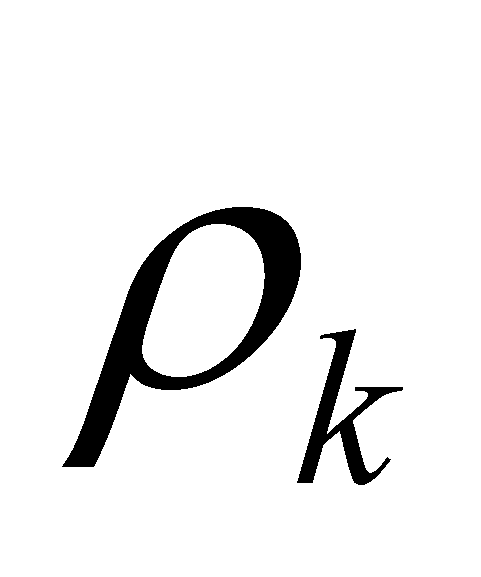

|
|
|
At the beginning of this chapter we have established that the mathematical model of a process is also a distribution, more precisely, a derived distribution of a primary distribution, and if a single attribute Y is distributed, then, the process is specific.
Both the primary
and derived distributions (as we have shown in chapter 2), have the
same type of qualitative attribute Y, distributed on
the same type of qualitative support attribute X, but,
within a primary distribution, the distribution elements are made-up
from quantitative singular values yk
(virtual or normal), assigned by means of relations fk
or

on singular values xk of the support
attribute X, whereas in case of a derived distribution (such
as the first rank distribution), the distribution element is made-up
from an elementary
quantitative variation assigned through a relation
or
to an elementary variation
of the support attribute (the notations are those from chapter 2, but
the difference is that the lower index m1 represents the
running number of the support element from a first rank derived
distribution, whereas, in case of a second rank distribution, it
would be m2 etc. (see also the example from annex X.2). As
objects, the support elementary intervals are limited by the two
boundaries (x1 and x2
from relation 2.2.2) with values settled in relation to the inner
reference xk, corresponding with the values
 and
and
 ,
which were mentioned in section 2.2.
,
which were mentioned in section 2.2.
Otherwise speaking,
a support elementary variation starts from the singular value x1
and it ends with the singular value x2,
the two values being related to the singular dependent values y1
and y2, which are the interval’s
boundaries of the distributed variation
 .
But this fact also means that a derived distribution element has two
primary distribution elements as boundaries. These two primary
distribution elements which “frame” a derived
distribution element have a special name in this paper.
.
But this fact also means that a derived distribution element has two
primary distribution elements as boundaries. These two primary
distribution elements which “frame” a derived
distribution element have a special name in this paper.
Definition 4.2.1: The total amount of the attribute’s invariant values of an object Ob, at a singular value xk of the support attribute, makes-up the state abstract object of object Ob, at a value xk .
Comment 4.2.1: Definition 4.2.1 is a much more general definition than the case approached in the definition’s preamble, that is why few explanations are required. When we have defined the object’s general model in chapter 3, we have noticed that it is an union of invariant distributions on a common support. Let us assume that we have a real object, such as a piece of wood, whose properties are distributed on a spatial support, with the inner domain defined through its boundary - the object’s outer surface. This piece of wood is decomposable in its elements (elements of space volume which are selected so that the properties to be evenly distributed on their inner domain), elements which have an invariant distribution of their spatial positions. This spatial distribution which is determined against the inner reference system, mostly for the elements which make-up the object’s surface represents the shape of this object. Specific colors, hardness, temperature, etc. shall be assigned to a certain position from the body surface, all of these being properties which are specific to that position. The union of these properties within the defined spatial position makes-up a state of the body element from that position. In this case, the support attribute is the spatial one, but the state’s definition is the same if the support attribute is another kind of attribute, such as the temporal or frequential one. If we move that piece of wood, the variable attribute is the spatial position of the object against an external reference. The object’s spatial position together with all the other inner properties at the initial moment t1 of the motion is a state of the object at that moment, and the position and all the other properties existing at other moment t2 represent a state of the object at another moment. The following paragraphs will reveal that there are various sorts of state objects and as a result, we could identify to what class the above-mentioned state (definition 4.2.1) belongs to.
As we have noticed in chapter 2, within the support interval of the first rank derived distribution element, the distribution of the dependent attribute is a linear distribution, with constant density and specific to the inner reference value xk of the support interval:
(4.2.1)
Definition 4.2.2: The specific elementary process (SEP) is a linear distribution (with constant, even density), with finite support, of a finite state variation of an attribute.
In other words, a derived distribution element of a single attribute Y is a SEP of this attribute. As we have also noticed in chapter 2, the distribution elementariness (and of the process at the same time) is given by the fact that the variation density (the same with the density of the linear primary distribution) is evenly distributed, which means that there is no inner differential information (contrast) between the two values of the density from this interval.
This invariant density of a SEP has various denominations, depending on the type of the support attribute; if this (support) is for example, a temporal attribute, the density given by the relation 4.2.1 is also called velocity (or variation rate) of the distributed attribute.
Definition 4.2.3: The even density module of a SEP (a scalar) is called the intensity of the specific elementary process.
The presentation had a general nature in the previous mentioned paragraph, valid both for the virtual distributions (ideal, mathematic) and also for the realizable ones. As we have seen in chapter 2, the differences consist only in the type of the singular values (AAV or normal) and in the amount of the support intervals.
Let us assume that
we are dealing with a specific realizable process (first rank,
too) of the attribute Y (that is a derived distribution of a
primary realizable distribution of this attribute). As for the
primary distribution, we shall have therefore a discrete realizable
support made-up from an ordered set of normal singular values
(made-up from DP range quanta, of
 even amount), each with xk inner
reference. According to this distribution version, the state
objects of an object Ob shall consist in normal invariant
values of the object’s attributes, related by means of
assignment relations to some normal support values. The assembly
made-up from the distributed attribute, support attribute,
distribution type, inner range and the reference system form an
object, as we have previously seen. Within a realizable
process, the main invariance condition imposed to the properties of
state object, in contradiction with the variability condition
required to the process, lead to a compromise (an equilibrium) as
regards the support DP amount, so that the attribute variation in
this interval to be under the perception threshold of IPS
which analyse this process.
even amount), each with xk inner
reference. According to this distribution version, the state
objects of an object Ob shall consist in normal invariant
values of the object’s attributes, related by means of
assignment relations to some normal support values. The assembly
made-up from the distributed attribute, support attribute,
distribution type, inner range and the reference system form an
object, as we have previously seen. Within a realizable
process, the main invariance condition imposed to the properties of
state object, in contradiction with the variability condition
required to the process, lead to a compromise (an equilibrium) as
regards the support DP amount, so that the attribute variation in
this interval to be under the perception threshold of IPS
which analyse this process.
Comment 4.2.2: A snapshot taken by a photo camera (at the end of a running contest, for example) represents a state of the spatial position attribute of the objects taken into consideration at a certain moment (that is the camera tripping moment). The exposure duration is settled so that the motion of the objects from the set to not be perceivable (to not impair the picture definition). This kind of time interval is in this case the temporal DP. Obviously, the motion processes have also continued during the exposure duration, but this motion is non-perceivable for the human IPS which analyzes the picture and it does not exist any more for the material support of the state information (picture), which must be invariant (information) once it has been recorded (stored). The faster the observing process, the lower must be the state’s support interval (such as the exposure duration in this example). The same method - sampling - is being used in the case of electronic data acquisition taken from the real processes, characterized by two time intervals: sample duration and the duration between two successive samples. The sample duration is selected so that the variation process to be insignificant (null) during its unfolding, and the interval between the samples is selected so that a process to arise during its unfolding, but it must be considered even in case of the most uneven stage of the real process. These conditions are met if the sampling frequency and the maximum frequency of the sampling process comply with the Niquist criterion .
The state of an attribute is therefore a stationary abstract object (deliberate pleonasm), namely, invariant, that is an object with a null process, as its characteristic process deployed during its existence.
Comment 4.2.3: According to the natural language, the processes are represented by verbs (with all their flexional forms). For displaying the invariance of an object or of a property, the static verbs are also used, for example “to remain”, “to stay” etc. These are examples of null processes which are specific to the objects during their invariance period.
We have discussed
so far about first rank SEP, the ones represented by a first rank
derived distribution element. If that specific process is more
complex, there will be two different successive (concatenated) SEP,
which means that there will also be a second rank derivative for the
primary distribution. The element of such a second rank distribution
shall be a second rank SEP, namely, a second rank finite difference
assigned to a support element by means of that relation (
or
 ).
Here, a special remark is required: because all the support elements
are equal one another, there will be no finite difference of higher
rank (all of them being null), so that, all the elements of the
derived distributions, regardless of their rank, shall have a support
element of the same amount
).
Here, a special remark is required: because all the support elements
are equal one another, there will be no finite difference of higher
rank (all of them being null), so that, all the elements of the
derived distributions, regardless of their rank, shall have a support
element of the same amount
 ,
but integer exponents of
,
but integer exponents of
 shall interfere in the expressions of the various ranks densities.
shall interfere in the expressions of the various ranks densities.
As a conclusion, any specific process, no matter how complex it is, can be modeled by some derived distributions of a primary distribution belonging to the variable attribute. The primary distribution is exclusively made-up from state-type elementary objects (we shall see next what kind of state), and the derived distributions are made-up from SEP-type elementary processes of various ranks..
Copyright © 2006-2011 Aurel Rusu. All rights reserved.